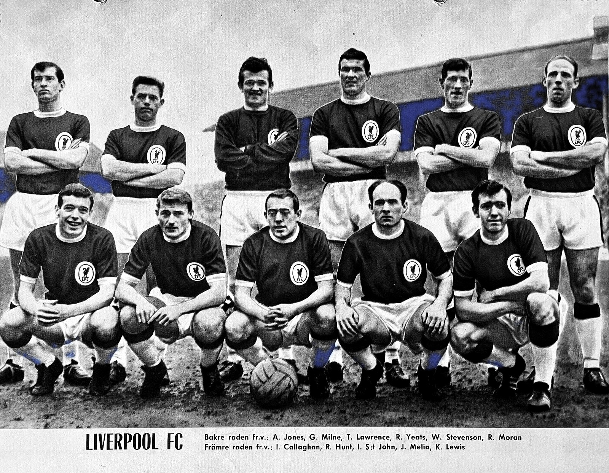
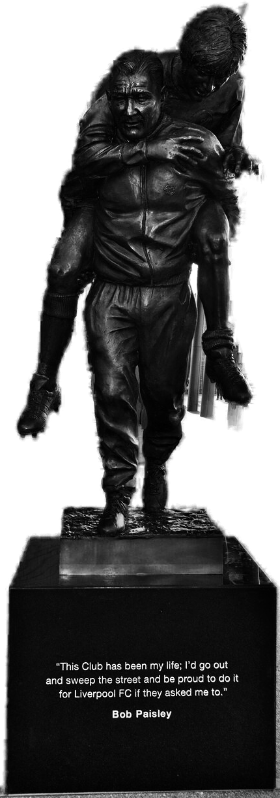

ANFIELD · LIVERPOOL
Estatua de Bill Shankly · llegó al club en 1959
0

LIVERPOOL FC, 1964 · FOTO: ESKIL MALMBERG (DOMINIO PÚBLICO)
ARRIBA, A LA DERECHA
RONNIE MORAN
Luego, entrenador. Guardaba los libros.

Jueves
UNA PÁGINA ANTIGUA
RECREACIÓN
RECREACIÓN
THE BOOT ROOM
BIBLE
Fotos: Rodhullandemu (CC BY-SA 4.0) · Eskil Malmberg (dominio público)
vía Wikimedia Commons · Cuarto, libro y cajas: recreación